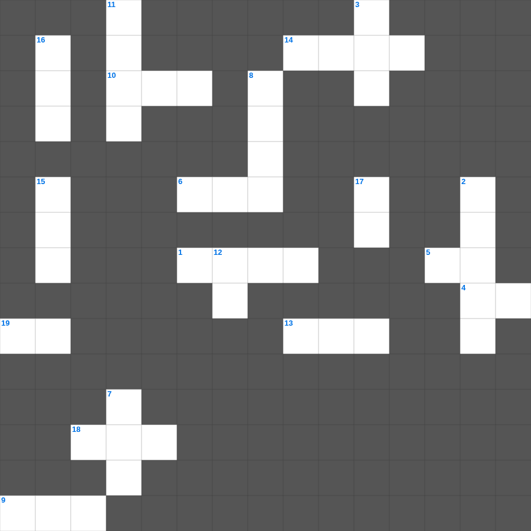

인물 열전: 세례 요한
📌 서비스 정의
십자가로세로는 교회 주보와 주일학교에서 사용할 수 있는 성경 기반 가로세로 퍼즐 서비스입니다. 성경 인물, 사건, 핵심 구절을 바탕으로 제작되었습니다. 온라인 풀이 및 인쇄 기능을 제공합니다.
오늘은 인물 열전의 주요 내용을 담은 인물 열전 성경공부 자료를 준비했습니다. 총 20개의 힌트가 있으며, 주일학교 교재나 성경공부 자료로 활용하기 좋습니다. 무료로 즐기는 인물 열전 가로세로 퍼즐을 지금 바로 풀어보세요!

📝 가로 힌트
1. 그는 흥하여야 하겠고 나는 이것하여야 하리라
4. 100세에 얻은 약속의 아들
5. 광야에서 외치는 이의 이것
6. 아버지가 요셉에게 지어준 특별한 옷
9. 요셉의 친동생 이름
10. 엘리야를 죽이려 했던 악한 왕비
13. 엘리야에게 떡과 고기를 물어다 준 새
14. 모세가 하나님을 만난 불타는 나무
18. 아브라함의 원래 이름
19. 모세의 대변인 역할을 한 형
📝 세로 힌트
2. 죽으면 이것하리이다
3. 다윗과 깊은 우정을 나눈 사울의 아들
7. 아브라함이 조카 롯과 헤어질 때 택한 땅
8. 세례 요한이 입은 옷의 재질
10. 다윗의 아버지는 누구?
11. 모세가 홍해를 가를 때 사용한 것
12. 유다인을 몰살하려 했던 악인
15. 나면서부터 하나님께 바쳐진 자
16. 삼손을 괴롭힌 민족
17. 요셉이 팔려간 나라
🧑🏫 교회 교육 자료 활용
이 퍼즐은 주일학교 교재 추천 자료로 활용할 수 있고, 주일학교 주보에 넣기 좋은 분량으로 구성되어 있습니다. 수업용 주일학교 교안에 활동지로 붙이거나, 예배 후 복습용 주일학교 공과교재로 바로 사용할 수 있습니다.
🏷️ 키워드
인물 열전 성경공부 자료, 인물 열전, 십자가로세로, 성경퀴즈, 말씀퀴즈, 가로세로퍼즐, 주일학교 교재 추천, 주일학교 주보, 주일학교 교안, 주일학교 공과교재